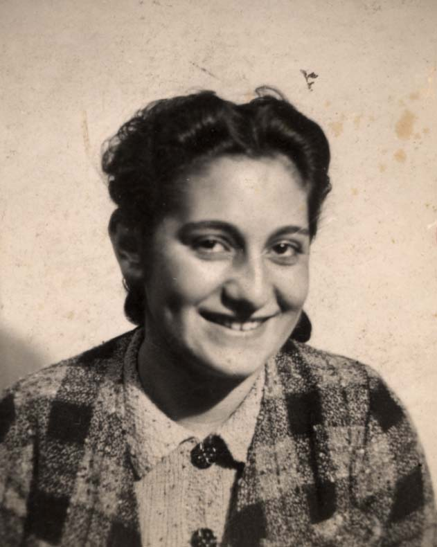

Portrait d’archive
Amélie Banda
Amélie BANDA
Amélie BANDA est né le 09/04/1923 à Metz en France.
Rassemblé à Lyon, elle est déportée à Auschwitz le 17/12/1943 par le convoi n°63. Elle est morte en déportation.
Dernière adresse connue : 9 Rue du Garet (Lyon)
Nom : BANDA
Prénom(s) : Amélie dite Loulou
Date naissance : 09/04/1923
Âge (ans) : 19
Lieu naissance : Metz
Pays ou département : Moselle
Lieu rassemblement : Lyon
Dernière adresse : 9 Rue du Garet
Ville : Lyon
Code postal : 69001
N° Convoi : 63
Date déportation : 17/12/1943
Informations diverses : Fille de Max Mendel Banda (03/03/1898, Przeworsk, Pologne) commerçant et de Brandel née Schwarz (22/02/1893, Przeworsk, Pologne). Amélie est la sœur de Hilda (23/01/1921, décédée le 03/05/2013, Montigny-lès-Metz) et de Caroline (Claire) épouse Schwartzberg (08/12/1925, Metz; décédée le 18/04/2016 à Metz). Avant guerre la famille habitait au 6 rue Paul Michaux à Metz. Ils se réfugient à Lyon où ils habitent au 9 Rue du Garet, 69001. Naturalisée le 17 octobre 1931 par décret collectif. N° du dossier de naturalisation : 108271 X 28. RETRAIT (dénaturalisé) : Séance n° 862 du 26 octobre 1942 Sous-commission 3 Décret du 24 avril 1943, publié au Journal officiel le 4 mai 1943. Demande de recours gracieux rejetée par décret du 28 janvier 1944.
Amélie est arrêtée le 28/11/1942 à Lyon et internée à la prison Montluc. Elle est déportée seule de Drancy à Auschwitz où elle est assassinée. Sa sœur Hilda rempliera une fiche de témoignage à Yad Vashem en 1992.
Nb. Simone Banda (née le 03/11/1933 à Metz) était la fille de Sigmund Banda (06/01/1904) - le frère de Mendel, le père d’Amélie - et de Chana née Bialska. Elle était donc la cousine germaine d’Amélie et habitait également au 9 rue du Garet avec la famille d’Amélie, après l’arrestation de ses parents à Ecommoy (Sarthe) le 17/07/1942 et leur déportation à Auschwitz (Convoi 8 du 20/07/1942). Elle était scolarisée à l’Ecole de filles Lamartine (69002, Lyon; Registre 1941-42. Simone s’est réfugiée dans un petit village d’Isère, seule où a été scolarisé, a gardé le petit bétail. Elle assistait à la messe. Elle rentre à Lyon fin 1944 et à Metz en 1945. Simone Banda (épouse Raymond Pragier) est décédée le 27/04/2022 à Metz.
Banda (Amélie), née le 9 avril 1923 à Metz (Moselle), décédée le 22 décembre 1943 à Auschwitz (Pologne). JO
Banda (Sigismond), né le 6 janvier 1904 à Przeworsk (Pologne), décédé le 25 juillet 1942 à Auschwitz (Pologne). Banda, née Rajchelson (Chaja, Sara) le 9 août 1901 à Minsk (Russie), décédée le 25 juillet 1942 en Pologne. Banda, née Rosenfeld (Chaje, Sure dite Sabina) le 7 avril 1898 à Kolbuszowa (Pologne), décédée le 18 février 1943 à Auschwitz (Pologne). Banda (Henny), née le 4 juillet 1924 à Metz (Moselle), décédée le 25 juillet 1942 à Auschwitz (Pologne). Banda (Pinkas dit Philippe), né le 17 novembre 1895 à Przeworsk (Galicie), décédé le 18 février 1943 à Auschwitz (Pologne).
Lieu de déportation : Auschwitz
Lieu de départ : Drancy
Nombre total de déporté·e·s du convoi : 850
Gazé·e·s à l'arrivée : 505 (59,4 %)
Survivant·e·s en 1945 : 31 (3,6 %)